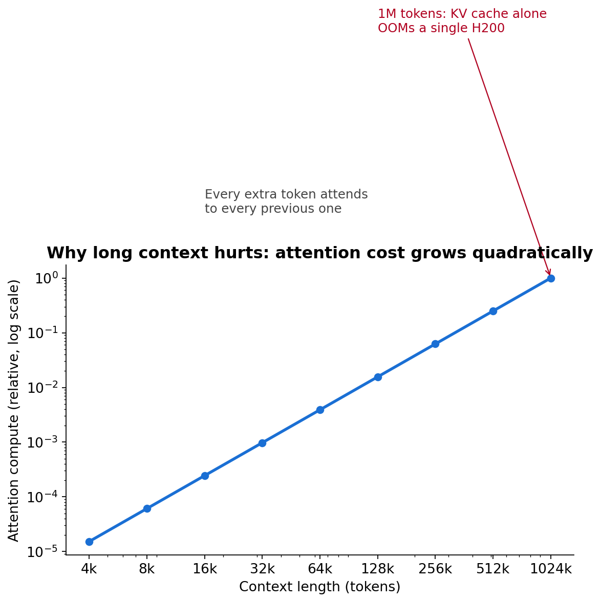
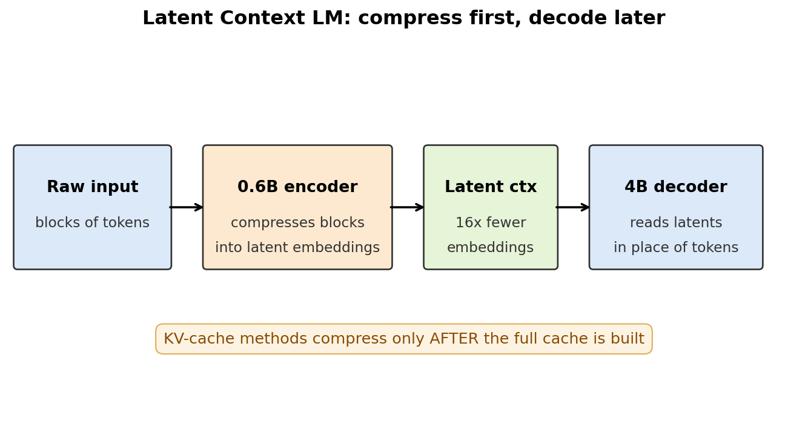
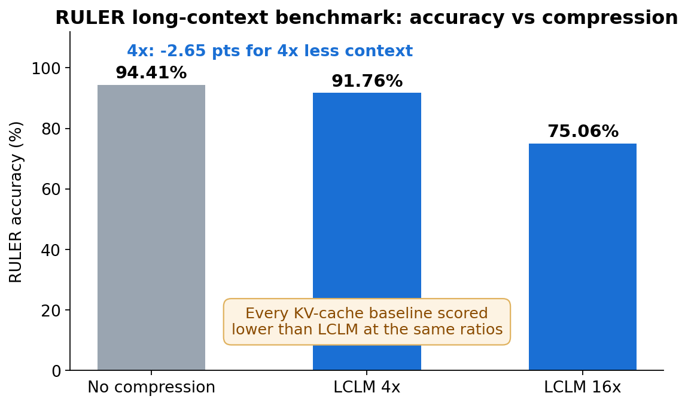
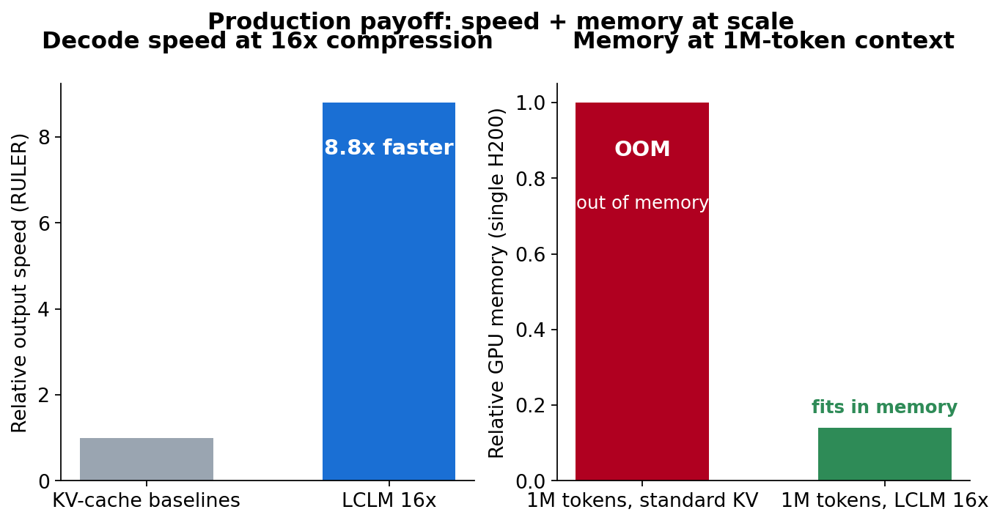

One-paste order for Medium's new-story editor: title → body → diagrams → notebook link → checklist.
Your agent's context window is a ticking cost bomb. Every retrieved document, every reasoning trace, every turn of conversation adds tokens — and tokens cost memory quadratically, not linearly. This week, a team from NYU, Columbia, Princeton, UMD, Harvard, and Lawrence Livermore published a fix that actually survives production: Latent Context Language Models (LCLMs). They compress input 16x before the decoder ever sees it — and beat every existing method at every ratio tested.
ELI5: why context is the bottleneck
Think of a model's context window as desk space. Attention means every new token looks at every previous token — so doubling your context roughly quadruples the work and the memory. The standard trick, KV-cache compression, is like photocopying the entire desk first and then throwing pages away. You still pay the full upfront cost.
LCLMs flip the order: compress first, decode later. At 1 million tokens, the uncompressed approach runs out of memory on a single H200 GPU. LCLM at 16x compression stays comfortably in bounds.
How it works
The architecture is an encoder-decoder split:
- A 0.6B encoder reads blocks of input tokens and compresses each block into a short sequence of latent embeddings — learned "summary vectors" that stand in for the raw text.
- A 4B decoder processes those latent embeddings in place of the original tokens. It never sees the full sequence.
Training ran on 350B+ tokens with a three-part recipe: continual pre-training with compressed and uncompressed spans interleaved, supervised fine-tuning on reasoning and long-context tasks, and an auxiliary reconstruction task that forces the encoder to keep fine-grained detail. That last ingredient is the one that matters: earlier compression work lost task performance whenever it optimized for faithful reconstruction. This recipe gets both.
An architecture search confirmed the scaling rule: scale the decoder, not the encoder. A bigger encoder buys almost nothing.
For RAG stacks, the integration story is simple — swap LCLMs in wherever you currently dump retrieved documents into context. Just run the documents through the compressor first. The paper also demos agents that selectively decompress useful passages — skim fast, zoom in on what's relevant.
State of the art: the numbers
On the RULER long-context benchmark:
- 4x compression: 91.76% accuracy vs 94.41% uncompressed. That's a 2.65-point drop for cutting context to one quarter. Nothing else in production gets close to this tradeoff.
- 16x compression: 75.06% — with 93.75% of input tokens removed. Every KV-cache method tested at the same ratio scored lower.
- 8.8x faster output than KV-cache baselines at 16x on RULER — because the savings hit decoder-side compute and memory, not just storage.
- On GSM8K, where the entire prompt is compressed rather than just retrieved documents, LCLMs outscored every other method at every compression ratio.
Two facts make this a production story, not a benchmark story. First, the compression happens before decoder prefill, so the ratio translates directly into real speedups on standard serving infrastructure — unlike methods that still materialize the full KV cache before evicting entries. Second, the models are open: HuggingFace at latent-context, code on GitHub (LeonLixyz/LCLM).
The honest gaps: reasoning-trace compression is unsolved. For agents with long chains of thought, context growth from the trace itself is a separate problem — the team says periodic trace compression "might work, but that remains to be determined." And teams plugging this into existing RAG pipelines will need to retune retrieval-quality metrics against compression behavior before shipping.
Takeaways
- Compress before prefill, not after. Decoder-side compression is the difference between a paper number and a production speedup.
- 4x compression now costs 2.65 accuracy points on long-context tasks. The quality/compression frontier moved this week.
- Scale the decoder, not the compressor. Encoder size is near-irrelevant to final accuracy.
- Reconstruction training is what makes it general. Faithfulness and task performance aren't a tradeoff if you train for both.
- Unfinished: online reasoning-trace compression. Watch this space — it's the next wall for long-running agents.
Paper: End-to-End Context Compression at Scale (arXiv 2606.09659). Models open-sourced on HuggingFace, code on GitHub.
Diagrams
Diagram 1 — Why context is the bottleneck — attention cost and memory vs. context length

Diagram 2 — LCLM architecture — encoder compresses blocks into latent embeddings, decoder reads those

Diagram 3 — RULER benchmark — accuracy at 4x and 16x compression vs. baselines

Diagram 4 — Speed and memory — output speedup and memory savings at 16x
